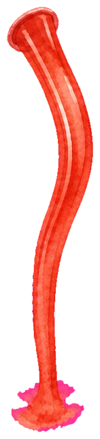

Layering here matches the shipped game: beaker, then bottle, then pour liquid on top. Drag the bottle to where it should sit. Drag the red dot to mark the spout on the artwork. Drag the blue dot to mark where the stream should start from. Adjust rotation with the slider. Numbers below update live — click Copy and paste the result to me when it looks right.